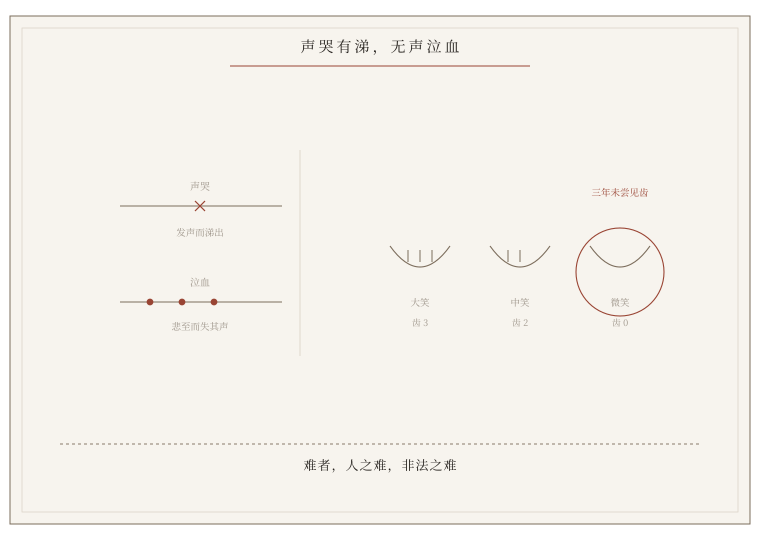

檀弓上 · 三·四十二 · 第 245 课
高子皋之执亲之丧也，泣血三年，未尝见齿，君子以为难。注「子皋，孔子弟子，名柴」「言泣无声，如血出」「言笑之微」「言人不能然」。
说什么事：一个人守丧三年，哭不出声而泪如血出，三年之中连笑也不见齿；君子不说他合礼，只说「难」。
落在哪一层：礼，兼及礼意与人之所能。
为何编在此位：上节论居处之常，此节论哀之至。常者众人共守，至者一人独能；礼不责人以至，君子记其难。
【经】高子皋之執親之喪也，泣血三年，未嘗見齒，君子以為難。
【注】子皋，孔子弟子，名柴。言泣无声，如血出。言笑之微。言人不能然。
【疏】此一节论高柴居丧过礼之事。案《史记·孔子弟子传》，高柴，郑人，字子皋。凡人涕泪，必因悲声而出；若血出，则不由声也。今子皋悲无声，其涕亦出，如血之出，故云「泣血」。既云「泣血三年」，得有微笑者，凡人之情，有哀有乐，哀至则泣血，乐至则微笑。凡人大笑则露齿本，中笑则露齿，微笑则不见齿。君子以高柴所为，凡人难可为之，何者？凡人发声始涕出，乐至为大笑；今高柴恒能如此，余人不能，故为难也。
高子皋 注「孔子弟子，名柴」，字子皋。
执亲之丧 为父母守丧。
泣血 注「言泣无声，如血出」。疏：涕因声出，血不由声。
未尝见齿 注「言笑之微」。疏列三笑：大笑露齿本、中笑露齿、微笑不见齿。
君子 当世之君子，非泛指。
以为难 注「言人不能然」。难者，非礼之难，是人之难。
高子皋为亲守丧，哭泣无声而泪如血出，三年如此；三年之中笑不见齿。君子认为这很难。
此节只一句记事，一句评语。记事者三：三年、泣血、未尝见齿。评语只二字：「为难」。此二字最可味。若高柴所为是礼之常，则当云「善」、当云「合礼」；而君子只说「难」——难者，人不能然也。礼不以此责天下，君子以此记一人。故知礼之常与人之至，是两件事：常者人人可守，至者一人能为。
第一层 泣血之训 注「言泣无声，如血出」。疏解最精：凡人涕泪必因悲声而出，若血出则不由声。故「泣血」非真出血，是「无声而涕出」之状——悲至而不能成声，其泪遂如血之自肌而出。此一字，写的是哀之极处失其声。
第二层 三年之久 三年是丧期之常，而「泣血三年」者，三年之中常如此，非一时之痛。凡哀之初至最烈，久而渐杀，此人三年不杀。故其所难不在烈，在不杀。
第三层 未尝见齿 疏列三笑之等：大笑露齿本，中笑露齿，微笑不见齿。「未尝见齿」者，三年之中连微笑亦无。此语最细：不是不笑，是笑而不见齿。礼不禁人笑，此人自不使齿见。
第四层 以为难 注「言人不能然」。此三字是评语的分寸所在：礼之常不责人以难，而君子记其难。记之者，非设之为法，是存之为例外——使后世知人之情有能至此者，亦使后世知此非人人可及。
与今日何干 把高标准记在「难」字上，不记在「当」字上。礼不要求人人泣血三年，但允许有人如此，且称之为难。今人动辄以少数人的极限为众人之标准，正是把「难」误作了「当」。
| 左 | 右 |
|---|---|
| 泣血三年 | 哀之不杀 |
| 泣无声，如血出 | 悲至失其声 |
| 未尝见齿 | 笑而不见齿 |
| 大笑露齿本／中笑露齿／微笑不见齿 | 三笑之等 |
| 君子以为难 | 记其难，非设其法 |
| 言人不能然 | 至者一人，常者众人 |
画一处墓旁的草庐，视点平。一位士人跪坐于庐中（衣极素、身形枯瘦、双目低垂、两颊有痕），面前一领空席，席上放着一只素碗与一双未动的箸。庐外远处一片新坟，坟前一株小树。庐柱上挂着一条麻带。不写文字、不画人面细节。赭色只用在麻带与新坟的土色上。
